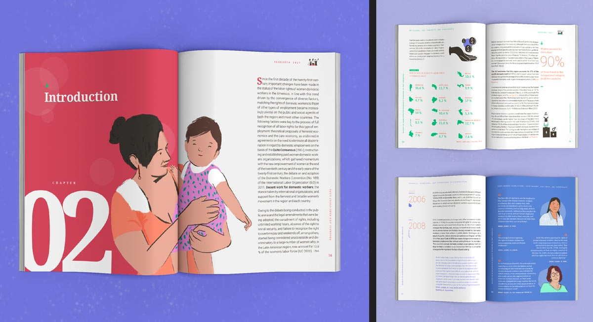
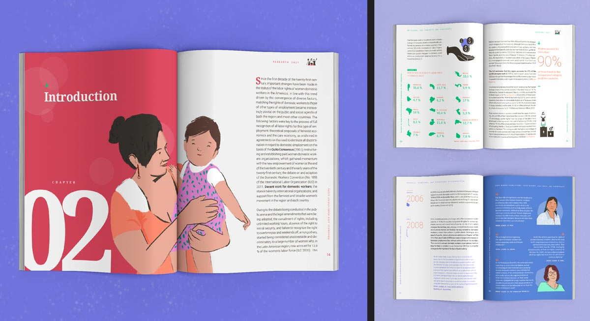

Trabajadoras del Hogar
> Estrategia de comunicación
No es un favor ni una ayuda, ¡ES UN TRABAJO!
 



Sobre el Proyecto
¿Cómo es el estado de los derechos de las trabajadoras del hogar en América latina?
Creamos un sistema de comunicación para la OEA integrando múltiples formatos y plataformas para divulgar información sobre el estado de los derechos de las trabajadoras del hogar en la región. Las narrativas buscaron acercarse a las audiencias y desde una representación cuidadosa y detallada situar al trabajo doméstico como uno de los trabajos primordiales para sostener la vida.
No basta con que un gobierno ratifique un acuerdo para que este se cumpla. Desde la creación del marco normativo hasta la implementación de las leyes y la verificación de su cumplimiento, todas las partes interesadas deben involucrarse.
Es esencial adaptar la presentación de la información a las situaciones e intereses de cada parte, lo que facilita su comprensión y contribuye a la toma de decisiones informadas. Es por esta razón que en este proyecto establecimos dos tonos de comunicación diferenciados: uno para empleadorxs y tomadoras de decisiones, y otro para las trabajadoras del hogar.
Las diferentes posibilidades de acceso a la información y tecnologías, sumado a la diversidad de contextos en los que se realiza esta labor, nos llevó a realizar mensajes de audio para Whatsapp, una parrilla de redes de publicación para Instagram y Facebook, un micrositio liviano y de carga rápida, videos y miniguías para difundir esta información.
Acerca del proyecto
Cliente: Comisión Interamericana de Mujeres
Año: 2022
Productos entregados: 1 micrositio bilingüe, 2 videos, 2 miniguías, 4 audios para compartir en whatsapp, 1 informe, 1 parrilla de publicación en redes.
Enlaces: